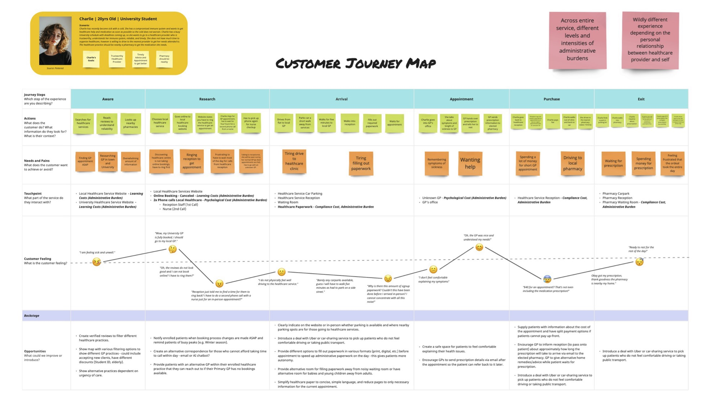

The Problem:
Currently, the communication across the Primary Healthcare System is disjointed for stakeholders (including healthcare professionals, administration staff and patients). This means that people who use the healthcare service do not have trust in the system because of how fragmented communication is. The problem I am trying to understand is: Why don’t people have equitable access to Primary Healthcare channels? Is it because of the administrative burden of signing up to Healthcare Systems?” I want to understand this because it’s a fundamental service that everyone interacts with along their lifetime.
The aim of this casestudy is to see how administrative burden affects all stakeholders within the healthcare system, including I want to focus on areas that hinder people’s accessibility due to paperwork, misinformation, lost data, or transferring to another healthcare provider. I want to focus on the patient experiences as currently in the USA, “…there is relatively limited attention in medical and health care services research regarding how administrative burdens and barriers affect patients” (Herd and Moynihan, 2021).
Herd and Moynihan (2021) state, “Administrative burdens have three categories: learning, compliance, and psychological costs:
- Learning costs are the search processes people engage in to determine what services they might need and how to access them.
- Compliance costs show people’s negative encounters with bureaucracy – paperwork, phone calls and administrative hurdles.
- Psychological costs are the stress and frustration from navigating these burdens. This could be from retelling traumatic events to try to obtain care.”
Herd, P., & Moynihan, D. (2021). Health care administrative burdens: Centring patient experiences. Health Services Research, 56(5), 751–754. https://doi.org/10.1111/1475-6773.13858
Focusing on this area may determine a solution where it is easy for patients to interact with the Primary Healthcare system to access their own paperwork, easier diagnosis and medication. I am hoping it will give me a broader understanding of why administrative burdens are such a massive problem across the Primary Healthcare sector and why people have such strong negative feelings about the Primary Healthcare system. By identifying a specific issue of why communication between all stakeholders is so disorganised and fragmented due to administrative burden so I can find opportunities to improve the overall service.
Analysising Interviews:
To get the ball rolling, I sent a questionnaire to particpants to gain a broad understanding of how administrative burden works within the healthcare system. The aim was to distil their feelings and thoughts about the current Primary Healthcare System and find the main pain points.
The Pain Points were:
- Accessibility: The current shortage of GPs nationwide means there are long waiting lists and new can’t enrol in Healthcare Services.
- Trust: Poor service quality, under-resourcing and restrictive access based on symptoms has led to a mistrust amongst the public.
- Barriers: Unreliable transport, personal availability, inability to get enrolled, staff shortages, and restrictive face-to-face appointments are everyday barriers.
- Personal hesitation: Bad reviews, reluctance to see a doctor, and inconvenience deter people from going.
Service Mapping:
Based on the collation of data, I created a storyboard and a user journey map. The storyboard is to outline how the Primary Healthcare Service currently works and visualises how it is leading to problematic outcomes. The customer journey map was to help ideintify key pinch points and problem areas.
Storyboards:

Storyboarding outlining the current negative expierence of interacting with the Primary Healthcare Service.
Customer Journey Map:

Develop:
From here, I brainstormed 30 ideas of how I could improve the service, before forming service concepts that supported my solution.
Next I created service blueprint. This merged all of my previous concepts to create created a holistic solution with many small altercations for a more seamless, ideal service that put the user needs first. This included how the user interacted with the staff, touchpoints between the service and how the backend would run (including databases).
The Service Blueprint
Prototype:
The final stage was prototyping the website. After some quick research of previous existing products, I did some wireframes to get the overall layout of the interface. This included a progress bar, navigation bar, and simple colour pallete.
The Final Design:
1) The user creates an account which includes personal information and medical history which is accessible by Primary Healthcare Services within a Nationwide Database.
2) Users can find Primary Healthcare on an interactive geographic map and can filter by location, waitlists, transportation preferences, and pharmacy proximity.
A search bar allows users to refine their search. By synthesising healthcare practices into one place, this removes learning cost.
3) Based on the users input, most recommended services appear. It details operating hours, peer reviews, available appointments. A review system helps remove psychological costs to the user by reassuring credibility through peer reviews.
4) Users click the 'Finding GPs' Button and are shown GP options including the best match and available appointment times which are update regularly.
5) When users select their preferred time, they are presented with different pricing options and the advantages of each option. Multiple payment methods give users more options and lessen stress, while removing potential cost barriers.
6) Once confirmed, the website shows the appointment time, the chosen pharmacy, transportation information, and a pricing breakdown with the payment method.
7) The homepage layout would be tailored to what the user wants to see. This could include a to-do list, past bookings, transportation, etc.
8) On the previous payments page, further details can be seen (e.g. outstanding payments).
Summary:
In conclusion, I have improved the overall service by:
- Removing barriers to accessibility to healthcare by creating a streamlined app that all Primary Healthcare Services would adapt and use.
- Creating a review system for Primary Healthcare Services to remove psychological costs to the user by reassuring them through peer reviews.
- Consistent updating of information about all services to remove learning costs onto the user.
- Letting users have autonomy over when and how they want to fill out healthcare paperwork, lowering compliance cost. This also applies to perscriptions as well.
- Having multiple avenues of payment methods to give users more options and less stress, also removes cost barriers.
- Physical Healthcare Service waiting rooms are more welcoming for those who are anxious (through visual stimuli and relaxing music) due to previous bad experiences. Creating better experiences and interactions within the Healthcare Service.
- A National Patient Database System means users do not have to repeat and explain their symptoms to unknown establishments and this allows easier communication with all staff memebers within the Healthcare Service.
- Stress levels are lessened for Healthcare Services as the online booking systems (working with A.I) helps to decrease the administrative load of booking for staff who can then concentrate on caring for their patients and users.